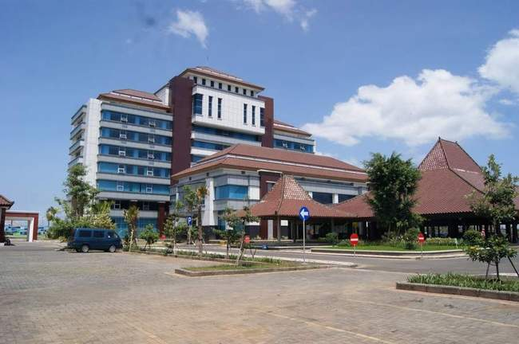
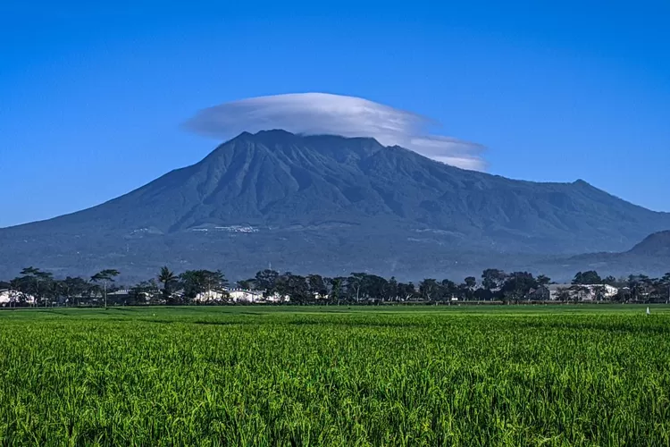
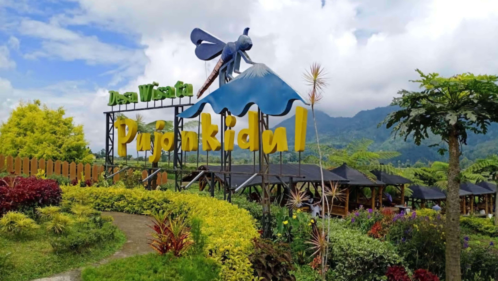
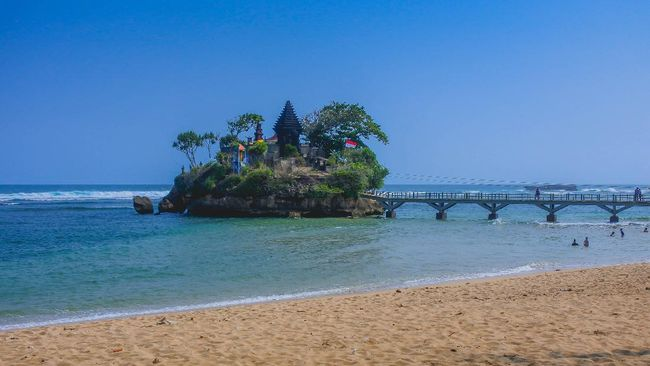

Sejarah

Kabupaten Malang memiliki sejarah yang kaya dan beragam. Wilayah ini telah menjadi pusat kegiatan budaya, politik, dan ekonomi sejak masa lampau.
Sejarah Kabupaten Malang dapat ditelusuri kembali ke masa prasejarah ketika wilayah ini ditempati oleh suku-suku pribumi yang menjalankan kehidupan pertanian dan peternakan.
Kemudian, pada masa kerajaan-kerajaan Hindu dan Buddha di Jawa, Kabupaten Malang menjadi bagian dari wilayah pemerintahan yang penting.
Selanjutnya, seiring dengan perkembangan Islam di Pulau Jawa, pengaruh Islam mulai merambah ke Kabupaten Malang, membawa perubahan budaya dan agama yang signifikan.
Pada era kolonial Belanda, Kabupaten Malang menjadi pusat administrasi kolonial di Jawa Timur. Bangunan-bangunan bersejarah Belanda masih dapat
ditemukan di beberapa bagian Kabupaten Malang hingga saat ini. Setelah kemerdekaan Indonesia pada tahun 1945, Kabupaten Malang terus mengalami
perkembangan pesat dalam bidang pertanian, industri, dan pariwisata. Kota-kota di Kabupaten Malang seperti Kota Malang dan Kota Batu menjadi tujuan
utama wisatawan domestik maupun mancanegara karena keindahan alamnya, kekayaan budayanya, dan keberagaman atraksinya.
Dengan demikian, Kabupaten Malang tetap menjadi salah satu destinasi penting dalam sejarah dan perkembangan Jawa Timur.
Geografis

Kabupaten Malang terletak di bagian tenggara Provinsi Jawa Timur, Indonesia. Wilayah ini memiliki koordinat geografis antara 7°45' hingga 8°20'
lintang selatan dan 112°0' hingga 112°30' bujur timur. Secara geografis, Kabupaten Malang memiliki topografi yang beragam,
mulai dari dataran rendah hingga pegunungan.
Dengan letak geografisnya yang beragam, Kabupaten Malang memiliki potensi alam yang kaya, baik untuk pertanian, pariwisata, maupun pengembangan industri.
Pegunungan yang menjulang tinggi menawarkan panorama alam yang menakjubkan dan menjadi tujuan wisatawan yang ingin menikmati keindahan alam serta berpetualang.
Wisata
Kabupaten Malang, terletak di Provinsi Jawa Timur, Indonesia, memiliki destinasi wisata yang menawarkan keindahan alam yang memukau dan beragam atraksi menarik.
Serta dikelilingi oleh pegunungan yang hijau dan udara yang sejuk.
Pujon Kidul

Wisata Pujon Kidul di Kabupaten Malang adalah destinasi yang menawarkan pengalaman liburan yang menarik bagi pengunjung dari segala usia.
Terletak di lereng Gunung Arjuna, wisata ini mempesona dengan udara segar pegunungan, keindahan alam yang hijau, dan panorama alam yang menakjubkan.
Pengunjung dapat menikmati berbagai aktivitas, mulai dari trekking menyusuri hutan pinus, bermain air di air terjun, hingga menikmati pemandangan indah dari atas bukit.
Pantai Balekambang

Pantai Balekambang, yang terletak di Kabupaten Malang, Jawa Timur, adalah surga pantai yang menawarkan pesona alam yang memukau.
Dikelilingi oleh hamparan pasir putih yang bersih dan air laut yang jernih, pantai ini menawarkan pemandangan yang memesona, serta ombak yang cocok untuk berselancar.
Selain itu, keberadaan tiga pulau kecil di sekitar pantai menambah keindahan alam yang memikat.